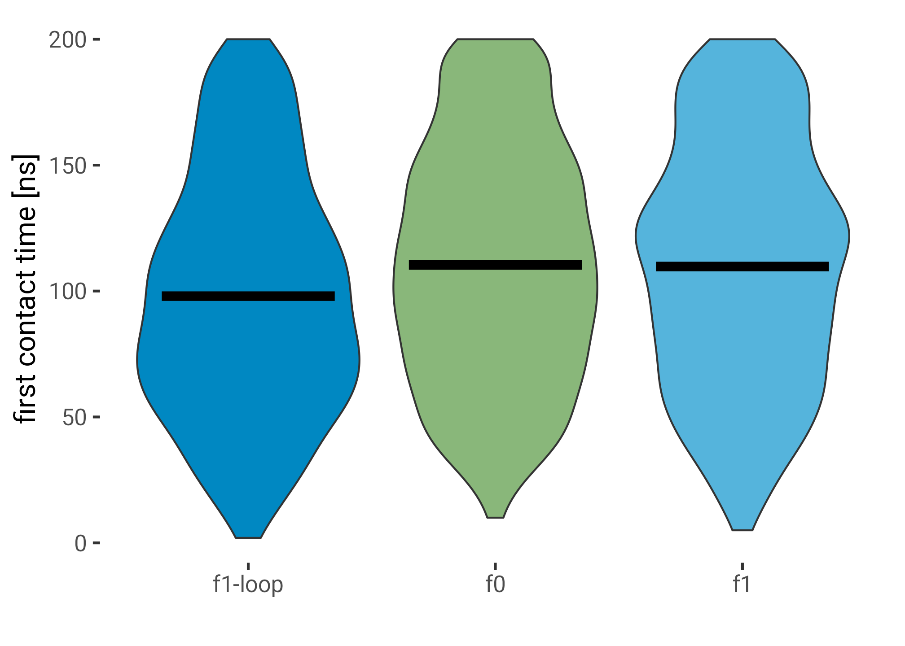
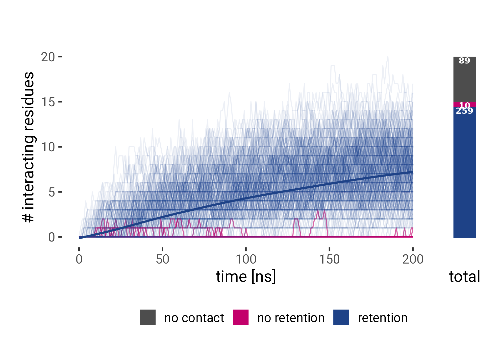
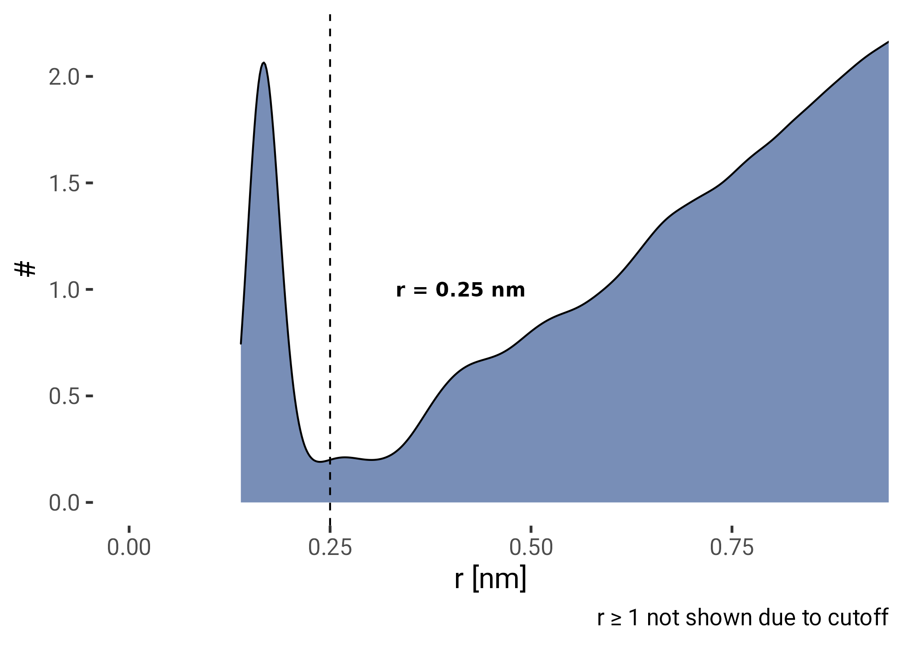
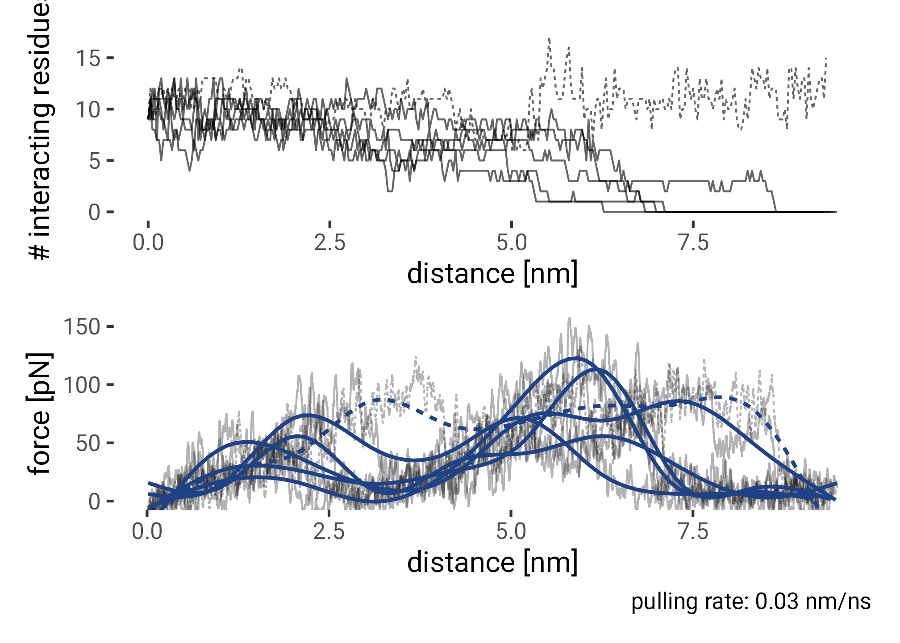
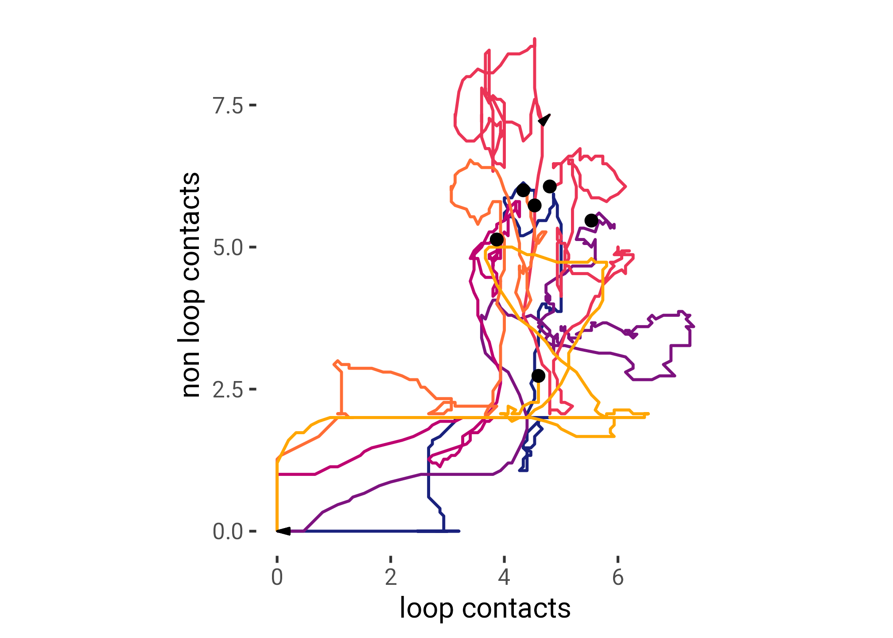
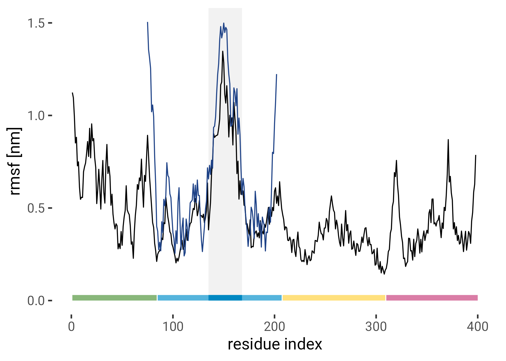

Code
source("./R/globals.R")To reproduce the graphics generated here, download the raw data from the archive and replace the value of the target data_path_prefix in _targets.R with the path to that data. Then use the next two code chunks to load packages and functions and run the targets pipeline (tar_make()). The raw data will then be processed such that you can load it in this document.
source("./R/globals.R")tar_visnetwork(callr_arguments = list(show = FALSE))Asp125 and Glu126 missing -> sequence shifted by 2 afterwards.
f0f1_run1 <- tar_read(f0f1_rot_sample_distances_per_run, branches = 1:60)
tar_load(CUTOFF)
tar_load(from_first_contact)
tar_load(interacting)
tar_load(sequence)
tar_load(rolling)
tar_load(stuck)
tar_load(ferm_interacting)
tar_load(ferm_annotation)
tar_load(ferm_colors)
tar_load(bool_colors)
tar_load(f0f1_pulling_smooth)
tar_load(f0f1_pulling_peaks)
tar_load(ferm_pip_sites)
tar_load(f0f1_pulling_interacting)
tar_load(ferm_rmsf)
tar_load(nmr_rmsf)
aa <- read_tsv("./assets/tables/aa.tsv") |>
mutate(
charge = str_remove(`Net charge at pH 7.4`, ",.+")
) |>
select(`1`, `3`, charge)
CHARGE_COLORS = c(
"Negative" = HITS_MAGENTA,
"Positive" = HITS_BLUE,
"Neutral" = "grey50"
)anti_join(
expand_grid(run = 1:6, angle = seq(0, 354, 6)),
distinct(interacting, run, angle)
)# A tibble: 1 × 2
run angle
<int> <dbl>
1 4 348interacting |>
drop_na() |>
count(run, angle) |>
filter(n != max(n))# A tibble: 2 × 3
run angle n
<int> <int> <int>
1 2 204 39203
2 3 234 788anti_join(
expand_grid(frame = 0:200, i = 1:197),
interacting |>
filter(run == 2, angle == 204) |>
distinct(frame, i)
)# A tibble: 394 × 2
frame i
<int> <int>
1 143 1
2 143 2
3 143 3
4 143 4
5 143 5
6 143 6
7 143 7
8 143 8
9 143 9
10 143 10
# … with 384 more rowsinteracting |>
drop_na() |>
group_by(run, angle) |>
summarise(frame = max(frame)) |>
ungroup() |>
filter(frame != max(frame))# A tibble: 1 × 3
run angle frame
<int> <int> <int>
1 3 234 3paths <- c("./assets/blender/render-rotsample/frame0001.png",
"./assets/blender/render-rotsample/frame0004.png",
"./assets/blender/render-rotsample/frame0003.png",
"./assets/blender/render-rotsample/frame0002.png",
"./assets/blender/render-rotsample/frame0001.png") |>map_chr(glue)
render_png <- function(p) grid::rasterGrob(png::readPNG(p))
pngs <- map(paths, render_png)
plt <- from_first_contact |>
group_by(i, angle) |>
summarise(
n_pip = mean(n_pip)
) |>
ungroup() |>
complete(i = 1:197, angle = seq(0, 354, 6), fill = list(n_pip = 0)) |>
ggplot(aes(i, angle, fill = n_pip)) +
geom_raster() +
scale_fill_gradient(low = "white", high = HITS_BLUE) +
scale_y_continuous(breaks = seq(0, 360, 90)) +
coord_cartesian(clip = "off", xlim = c(0, 207)) +
labs(
x = "residue index",
y = "angle [deg]",
fill = expression(bar(n)[pip2])
)
grobs <- ggplotGrob(plt)
plt <- plt +
guides(
fill = guide_colorbar(
barheight = unit(0.7, "grobheight", data = grobs$grobs),
frame.colour = "black")
)
anot <- ggplot(ferm_annotation[1:3, ]) +
aes(
ymin = 0, ymax = 10,
xmin = imin, xmax = imax,
fill = domain) +
geom_rect(show.legend = FALSE) +
geom_text(aes(y = 5, x = (imin + imax) / 2, label = domain),
color = "black") +
theme_void() +
coord_cartesian(clip = "off", xlim = c(0, 207)) +
scale_fill_discrete(type = ferm_colors)
vmd <- wrap_plots(pngs, ncol = 1)
main <- (plt / anot) +
plot_layout(heights = c(20, 1)) +
plot_annotation()
((vmd / plot_spacer()) | main) +
plot_layout(widths = c(1, 10))
update <- function(data, row, colname, value) {
col <- rlang::as_name(rlang::enquo(colname))
data[row, col] <- value
data
}plt <- from_first_contact |>
group_by(i) |>
summarise(n_pip = mean(n_pip)) |>
left_join(sequence, by = "i") |>
left_join(aa, by = c('res' = '1')) |>
update(1, charge, "Positive") |>
ggplot(aes(x = i, y = n_pip)) +
annotate(geom = "rect",
xmin = 140, xmax = 164,
ymin = 0, ymax = Inf,
color = NA,
fill = "black",
alpha = 0.05) +
geom_col(aes(fill = charge),
alpha = 1,
width = 0.8,
show.legend = TRUE) +
geom_text(aes(label = res, color = charge),
fontface = "bold",
vjust = -0.2,
data = ~ filter(.x, n_pip > 0.1), show.legend = FALSE) +
scale_fill_manual(
values = CHARGE_COLORS, aesthetics = c("fill", "color"),
name = "Net Charge at pH 7.4"
) +
# scale_y_continuous(breaks = seq(0, 360, 90), expand = expansion(mult = c(0, 0.1))) +
labs(y = expression(n[PIP[2]])) +
coord_cartesian(clip = "off", xlim = c(0, 207)) +
labs(
x = "residue index",
y = expression(bar(n)[PIP[2]]),
) +
theme(
axis.text.x = element_text(angle = 45, hjust = 1),
legend.position = c(0, 1),
legend.justification = c(0, 1),
legend.title = element_text(size = 12)
)
grobs <- ggplotGrob(plt)
anot <- ggplot(ferm_annotation[1:3, ]) +
aes(
ymin = 0, ymax = 10,
xmin = imin, xmax = imax,
fill = domain) +
geom_rect(show.legend = FALSE) +
geom_text(aes(y = 5, x = (imin + imax) / 2, label = domain),
color = "black") +
theme_void() +
coord_cartesian(clip = "off", xlim = c(0, 207)) +
scale_fill_discrete(type = ferm_colors)
(plt / anot) +
plot_layout(heights = c(20, 1)) +
plot_annotation()
plt <- interacting |>
group_by(frame, angle) |>
summarise(pip = mean(n_pip)) |>
ggplot(aes(angle, frame, fill = pip)) +
geom_raster() +
scale_fill_gradient(low = "white", high = HITS_BLUE) +
scale_x_continuous(breaks = seq(0, 360, 90)) +
guides(color = guide_colorbar(barheight = 16)) +
labs(
fill = expression(bar(n)[PIP[2]]),
y = "time [ns]",
x = "angle [deg]"
)
grobs <- ggplotGrob(plt)
plt + guides(fill = guide_colorbar(barheight = unit(0.7, "grobheight",
data = grobs$grobs),
frame.colour = "black"))
interacting |>
group_by(run, angle, i) |>
arrange(frame) |>
filter(n_pip > 0) |>
slice_min(frame) |>
group_by(i, angle) |>
summarise(frame = mean(frame)) |>
ungroup() |>
mutate(
region = case_when(
between(i, 135, 168) ~ " ",
between(i, 1, 84) ~ "f0",
between(i, 85, 207) ~ "f1",
TRUE ~ "rest"
),
) |>
ggplot(aes(region, frame)) +
geom_violin(aes(fill = region)) +
# ggbeeswarm::geom_quasirandom(width = 0.4) +
stat_summary(fun = "mean", geom = "crossbar", width = 0.7, size = 1) +
scale_x_discrete(labels = c("f1-loop", "f0", "f1"), name = "") +
scale_fill_discrete(type = ferm_colors) +
guides(fill = "none") +
labs(y = "first contact time [ns]")
interacting |>
group_by(run, angle, i) |>
arrange(frame) |>
filter(n_pip > 0) |>
slice_min(frame) |>
group_by(i, angle) |>
summarise(frame = mean(frame)) |>
ungroup() |>
mutate(
region = case_when(
between(i, 135, 168) ~ "f1-loop",
between(i, 1, 84) ~ "f0",
between(i, 85, 207) ~ "f1",
TRUE ~ "rest"
),
) |>
(\(x) t.test(frame ~ region == "f1-loop", data = x))()
Welch Two Sample t-test
data: frame by region == "f1-loop"
t = 6.8669, df = 2112.6, p-value = 8.597e-12
alternative hypothesis: true difference in means between group FALSE and group TRUE is not equal to 0
95 percent confidence interval:
8.634507 15.537756
sample estimates:
mean in group FALSE mean in group TRUE
110.06539 97.97926 interacting |>
group_by(run, angle, i) |>
arrange(frame) |>
filter(n_pip > 0) |>
slice_min(frame) |>
ungroup() |>
drop_na() |>
mutate(
region = case_when(
between(i, 135, 168) ~ " ",
between(i, 1, 84) ~ "f0",
between(i, 85, 207) ~ "f1",
TRUE ~ "rest"
),
angle = cut(angle, breaks = seq(0, 360, by = 60), include.lowest = TRUE)
) |>
ggplot(aes(angle, fill = region)) +
geom_bar(position = "dodge2") +
scale_fill_discrete(type = ferm_colors, labels = c("f1-loop", "f0", "f1")) +
scale_y_continuous(expand = c(0, 1)) +
theme(axis.text.x = element_text(size = 10, angle = 45, hjust = 1)) +
labs(y = "# region made first contact")
f0f1_stickiness <- rolling |>
group_by(run, angle) |>
slice_max(time) |>
summarise(stuck = n_i > 0) |>
ungroup()
f0f1_time_ri <- interacting |>
group_by(run, angle, frame) |>
summarise(n_i = sum(n_pip > 0)) |>
ungroup() |>
left_join(f0f1_stickiness)
plt1 <- f0f1_time_ri |>
filter(!is.na(stuck)) |>
mutate(stuck = fct_rev(factor(stuck))) |>
ggplot(aes(frame, n_i, group = paste(run, angle), color = stuck)) +
geom_line(aes(alpha = stuck)) +
geom_smooth(aes(group = stuck, color = stuck), se = FALSE,
data = ~filter(.x, stuck == TRUE)) +
scale_color_manual(values = bool_colors, name = "retention") +
scale_alpha_manual(values = c(`TRUE` = 0.08, `FALSE` = 0.6)) +
labs(x = "time [ns]",
y = "# interacting residues") +
coord_cartesian(clip = "off") +
guides(color = "none", alpha = "none") +
theme(
plot.margin = unit(c(1, 0, 1, 1), "lines")
)
plt2 <- stuck |>
ggplot(aes(x = 0, fill = stuck, n, label = paste0(n))) +
geom_col(position = "stack") +
geom_text(
vjust = 1.1,
position = "stack",
fontface = "bold",
size = 3,
color = "white"
) +
scale_x_continuous(breaks = NULL) +
scale_fill_manual(values = c("grey30", HITS_MAGENTA, HITS_BLUE)) +
labs(x = "total", y = "", title = "") +
theme(
legend.position = "top",
axis.text = element_blank(),
axis.ticks = element_blank(),
plot.margin = unit(c(1, 1, 0, 0), "lines")
) +
guides(fill = guide_legend(title = ""))
(plt1 | plt2) +
plot_layout(widths = c(15, 1), guides = 'collect') &
theme(legend.position = "bottom")
plt <- f0f1_run1 |>
filter(r != 1) |>
ggplot(aes(r, y = stat(density))) +
geom_density(fill = HITS_BLUE, alpha = 0.6) +
geom_vline(xintercept = CUTOFF, lty = 2) +
annotate("text", x = CUTOFF, y = 1,
label = glue("r = {CUTOFF} nm"), hjust = -0.5,
fontface = "bold") +
labs(
x = "r [nm]",
y = "#",
caption = "r ≥ 1 not shown due to cutoff"
) +
coord_cartesian(xlim = c(0, 0.9))
plt
plt_contacts <- f0f1_pulling_interacting |>
group_by(run, frame) |>
summarise(contacts = sum(n_pip > 0)) |>
ggplot(aes(frame * 0.03, contacts)) +
geom_line(aes(group = run, lty = (run == 4)), alpha = 0.6) +
labs(
x = "distance [nm]",
y = "# interacting residues"
) +
guides(lty = "none")
plt_curves <- f0f1_pulling_smooth |>
ggplot(aes(time / 1e3 * 0.03, f)) +
geom_line(aes(group = run, lty = (run == 4)), alpha = 0.3) +
geom_smooth(aes(group = run, lty = (run == 4)), se = FALSE, color = HITS_BLUE) +
labs(x = "distance [nm]",
y = "force [pN]",
caption = "pulling rate: 0.03 nm/ns") +
coord_cartesian(ylim = c(0, 150)) +
guides(lty = "none")
(plt_contacts / plt_curves)
f0f1_pulling_interacting |>
group_by(run) |>
filter(frame == max(frame)) |>
summarise(sum(n_pip > 0))# A tibble: 6 × 2
run `sum(n_pip > 0)`
<dbl> <int>
1 1 0
2 2 0
3 3 0
4 4 15
5 5 0
6 6 0# loop: 135 to 168
df <- f0f1_pulling_interacting |>
arrange(run, frame, i) |>
mutate(loop = between(i, 135, 168)) |>
group_by(run, frame, loop) |>
summarise(contacts = sum(n_pip > 0)) |>
group_by(run, loop) |>
mutate(contacts = zoo::rollmean(contacts, 15, NA)) |>
pivot_wider(names_from = loop, values_from = contacts) |>
ungroup()
head_tail <- function(data, ...) {
bind_rows(
slice_max(data, ...),
slice_min(data, ...)
)
}
points <- df |>
filter(!is.na(`FALSE`), !is.na(`TRUE`)) |>
group_by(run) |>
slice_head()
arrows_end <- df |>
filter(!is.na(`FALSE`), !is.na(`TRUE`)) |>
group_by(run) |>
head_tail(frame, n = 2) |>
arrange(run, frame) |>
mutate(end = rep(1:(n() %/% 2), each = 2)) |>
filter(end == 2)
df |>
left_join(
f0f1_pulling_smooth |>
select(run, time, f) |>
mutate(frame = time %/% 1e3) |>
group_by(run, frame) |>
summarise(f = mean(f))
) |>
ggplot(aes(`TRUE`, `FALSE`, color = f, group = paste(run))) +
geom_path() +
geom_point(data = points, color = "black") +
geom_path(
aes(group = paste(run, end)),
color = "black",
data = arrows_end,
arrow = arrow(angle = 15, ends = "last", type = "closed",
length = unit(0.4, "lines")),
) +
scale_color_viridis_c(direction = -1) +
coord_equal() +
labs(
x = "loop contacts",
y = "non loop contacts",
color = "F [pN]"
)colors <- c("#19217d", "#7d127f", "#be0170", "#eb3456", "#ff6d35", "#ffa600")
df |>
ggplot(aes(`TRUE`, `FALSE`, color = factor(run), group = paste(run))) +
geom_path(size = 0.8) +
geom_point(data = points, color = "black", size = 3) +
geom_path(
aes(group = paste(run, end)),
color = "black",
data = arrows_end,
arrow = arrow(angle = 15, ends = "last", type = "closed",
length = unit(0.5, "lines")),
) +
# scale_color_gradient(high = "#98cde9", low = "#003063") +
# scale_colour_brewer(type = "qual", palette = "Set1") +
scale_color_manual(values = colors) +
coord_equal() +
guides(color = "none", alpha = "none") +
labs(
x = "loop contacts",
y = "non loop contacts",
color = ""
)
# rate: 0.03 nm/ns
rate <- 0.03
plt <- f0f1_pulling_interacting |>
group_by(frame, i) |>
summarise(n_pip = mean(n_pip)) |>
mutate(d = frame * rate) |>
ggplot(aes(i, d, fill = n_pip)) +
geom_raster() +
# facet_wrap(~run) +
scale_fill_gradient(low = "white", high = HITS_BLUE) +
coord_cartesian(clip = "off", xlim = c(0, 207)) +
guides(fill = "none") +
labs(y = "pulling distance [nm]",
x = "residue index"
# caption = "pulling rate: 0.03 nm/ns"/
)
anot <- ggplot(ferm_annotation[1:3, ]) +
aes(
ymin = 0, ymax = 10,
xmin = imin, xmax = imax,
fill = domain) +
geom_rect(show.legend = FALSE) +
geom_text(aes(y = 5, x = (imin + imax) / 2, label = domain),
color = "black") +
theme_void() +
coord_cartesian(clip = "off", xlim = c(0, 207)) +
scale_fill_discrete(type = ferm_colors)
(plt / anot) +
plot_layout(heights = c(20, 1)) +
plot_annotation()
plt <- ferm_interacting |>
filter(run == 6) |>
ggplot(aes(frame, i, fill = n_pip)) +
geom_raster() +
scale_fill_gradient(low = "white", high = HITS_BLUE, breaks = c(0, 1, 2, 3)) +
guides(fill = guide_legend(show.limits = TRUE)) +
labs(
x = "time [ns]",
y = "residue index",
fill = expression(n[pip[2]])
) +
theme(
legend.position = "bottom", legend.key = element_rect(color = "black")
) +
lims(y = c(0, 400))
anot <- ggplot(ferm_annotation) +
aes(
xmin = 0, xmax = 10,
ymin = imin, ymax = imax,
fill = domain) +
geom_rect(show.legend = FALSE) +
geom_hline(data = ferm_pip_sites, aes(yintercept = ri), color = "red") +
geom_text(
aes(x = 5, y = (imin + imax) / 2, label = domain),
color = "black"
) +
theme_void() +
scale_fill_discrete(type = ferm_colors)
(plt | anot) +
plot_layout(widths = c(25, 1)) +
plot_annotation()
ferm_interacting |>
filter(run != 7) |>
ggplot(aes(frame, i, fill = n_pip)) +
geom_raster() +
facet_wrap(~ run, labeller = label_both) +
scale_fill_gradient(low = "white", high = HITS_BLUE, breaks = c(0, 1, 2, 3)) +
guides(fill = guide_legend(show.limits = TRUE)) +
labs(
x = "time [ns]",
y = "residue index",
fill = expression(n[pip[2]])
) +
theme(legend.position = "bottom",
panel.background = element_rect(color = "black", fill = NA)) 
plt <- ferm_interacting |>
group_by(i) |>
summarise(n_pip = mean(n_pip)) |>
left_join(sequence) |>
left_join(aa, by = c('res' = '1')) |>
update(1, charge, "Positive") |>
ggplot(aes(x = i, y = n_pip)) +
annotate(geom = "rect",
xmin = 140, xmax = 164,
ymin = 0, ymax = Inf,
color = NA,
fill = "black",
alpha = 0.05) +
geom_col(aes(fill = charge),
alpha = 1,
width = 0.8) +
geom_text(aes(label = res, color = charge),
fontface = "bold",
vjust = -0.2,
data = ~ filter(.x, n_pip > 0.1), show.legend = FALSE) +
scale_fill_manual(
values = CHARGE_COLORS, aesthetics = c("fill", "color"),
name = "Net Charge at pH 7.4"
) +
scale_y_continuous(expand = expansion(mult = c(0, 0.1))) +
scale_x_continuous(breaks = seq(0, 400, 50)) +
labs(y = expression(n[PIP[2]])) +
coord_cartesian(clip = "off", xlim = c(0, 400)) +
labs(
x = "residue index",
y = expression(bar(n)[PIP[2]])
) +
theme(
axis.text.x = element_text(angle = 45, hjust = 1),
legend.position = c(0, 1),
legend.justification = c(0, 1),
legend.title = element_text(size = 12)
)
grobs <- ggplotGrob(plt)
plt <- plt +
guides(
color = guide_colorbar(
barheight = unit(0.7, "grobheight", data = grobs$grobs),
frame.colour = "black"
)
)
anot <- ggplot(ferm_annotation) +
aes(
ymin = 0, ymax = 10,
xmin = imin, xmax = imax,
fill = domain) +
geom_rect(show.legend = FALSE) +
geom_vline(data = ferm_pip_sites, aes(xintercept = ri), color = "red") +
geom_text(aes(y = 5, x = (imin + imax) / 2, label = domain),
color = "black") +
theme_void() +
coord_cartesian(clip = "off", xlim = c(0, 400)) +
scale_fill_discrete(type = ferm_colors)
(plt / anot) +
plot_layout(heights = c(20, 1)) +
plot_annotation()
f0f1_interacting <- from_first_contact |>
group_by(i) |>
summarise(n_pip = mean(n_pip))
ferm_interacting |>
group_by(i) |>
summarise(n_pip = mean(n_pip)) |>
left_join(sequence) |>
left_join(aa, by = c('res' = '1')) |>
update(1, charge, "Positive") |>
left_join(f0f1_interacting, by = c('i'),
suffix = c('_ferm', '_f0f1')) |>
replace_na(list(`n_pip.y` = 0)) |>
filter(between(i, 135, 170)) |>
pivot_longer(
starts_with('n_pip'),
names_to = 'simulation',
names_prefix = 'n_pip_',
values_to = 'n_pip') |>
group_by(simulation) |>
mutate(n_pip = n_pip / max(n_pip, na.rm = TRUE)) |>
ungroup() |>
ggplot(aes(x = i, y = n_pip)) +
annotate(geom = "rect",
xmin = 140, xmax = 164,
ymin = 0, ymax = Inf,
color = NA,
fill = "black",
alpha = 0.05) +
geom_col(aes(fill = simulation),
alpha = 1,
width = 0.8,
position = 'dodge2') +
geom_text(aes(label = res),
fontface = "bold",
vjust = -0.2,
data = ~ filter(.x, n_pip > 0.1) |>
group_by(i) |> slice_max(n_pip),
show.legend = FALSE) +
scale_fill_manual(
values = c(HITS_BLUE, HITS_GREEN), aesthetics = c("fill"),
name = "Simulation System"
) +
scale_y_continuous(expand = expansion(mult = c(0, 0.1))) +
scale_x_continuous(breaks = seq(140, 170, 4)) +
# coord_cartesian(clip = "off", xlim = c(0, 400)) +
labs(
x = "residue index",
y = expression(paste('standardized ', bar(n)[PIP[2]]))
) +
theme(
axis.text.x = element_text(angle = 45, hjust = 1),
legend.position = c(0, 1),
legend.justification = c(0, 1),
legend.title = element_text(size = 12)
)Root mean squared fluctiation of the residues of the FERM domain in equilibrium simulaiton compared to the RMSF of the structure ensemble of the NMR structure of F1 (pdb id 2KC2).
ferm_rmsf |>
ggplot(aes(residue, rmsd)) +
annotate(geom = "rect",
xmin = 135, xmax = 168,
ymin = 0, ymax = Inf,
color = NA,
fill = "black",
alpha = 0.05) +
geom_line() +
geom_line(data = nmr_rmsf, color = HITS_BLUE) +
geom_rect(
data = ferm_annotation,
inherit.aes = FALSE,
aes(xmin = imin, xmax = imax, fill = domain),
ymin = 0, ymax = 0.03
) +
labs(
x = "residue index",
y = "rmsf [nm]"
) +
scale_fill_discrete(type = ferm_colors) +
guides(fill = "none")